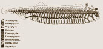
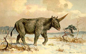

Abiogenèse (Il y a 3.8 milliards d'années)
Apparition de la vie sur Terre d'après le registre fossile.
Plus d'infos...
Cyanobacteria (Il y a 2.1 milliards d'années)
Organisme capable de réaliser de la photosynthèse. Ils ont contribué à l'augmentation du taux d'oxygène dans l'atmosphère terrestre.
Plus d'infos...
Eucaryote (Il y a 1.6 milliards d'années)
Apparition des organismes unicellulaires dotés de noyau et de mitochondries dans leur cellule. Ceci est dû à des événements d'endosymbioses primaires.
Plus d'infos...
Organismes multicellulaires (Il y a 800 millions d'années)
L'apparition des premiers organismes multicellulaires date d'au moins 800Ma. La multicellularité est cependant apparue au moins 25 fois au cours de l'évolution, par des mécanismes différents, probablement en raison des avantages sélectifs qu'elle confère, comme la possibilité d'une augmentation de la taille de l'organisme ou d'une spécialisation des différentes cellules.
Plus d'infos...

Snowball Earth (Il y a 700 millions d'années)
L'hypothèse de la Terre boule de neige (Snowball Earth, qu'il serait plus juste de remplacer par Iceball Earth, c'est-à-dire Terre boule de glace), suppose que la surface de la Terre fut entièrement couverte de glace, il y a plus de 650 millions d'années.
Plus d'infos...
La Faune Ediacara (Il y a 575 millions d'années)
La Faune de l'Édiacarien (autrefois appelée faune vendienne) est constituée d'organismes en forme de feuille ou de tube datant de l'Édiacarien, (−635 à −541 Ma), la dernière période géologique de l'ère néoprotérozoïque.
Plus d'infos...
Biominéralisation (Il y a 550 millions d'années)
Apparition de structure minérale élaborée créée par un organisme vivant.
Plus d'infos...

Vertebrés (Il y a 540 millions d'années)
Certains fossiles possèdent des vertèbres rudimentaires (vers -500 Ma): c'est la naissance des premiers vertébrés.
Plus d'infos...
Sortie des eaux (Il y a 500 millions d'années)
Conquête des continents
Plus d'infos...
Plante non-vasculaire (Il y a 465 millions d'années)
Apparition des plantes non-vasculaires
Plus d'infos...
Osseux/Cartilagineux (Il y a 460 millions d'années)
Vers - 460 Ma, les poissons osseux, comme les colacanthes, apparaissent.
Plus d'infos...
Extinction Ordovicien (Il y a 445 millions d'années)
Cette première extinction est apparue suite à une grande glaciation, et a engendré une perte d'environ 60% des genres.
Plus d'infos...
Tétrapodes (Il y a 390 millions d'années)
Apparition des tétrapodes, qui possèdent des membres leur facilitant la locomotion sur le sol.
Plus d'infos...
Plantes vasculaires (Il y a 385 millions d'années)
Apparition des plantes vasculaires.
Plus d'infos...
Extinction Dévonien (Il y a 370 millions d'années)
Cette extinction située au Dévonien entraîne la perte d'environ 50% des genres à cette époque. Elle pourrait être due à un phénomène d'anoxie des océans à cause de la conquète du milieu terrestre par la végétation.
Plus d'infos...
Amniotes (Il y a 350 millions d'années)
Apparition des amniotes, dont les oeufs sont capables de se développer en dehors du milieu aquatique.
Plus d'infos...
Extinction Permien-Trias (Il y a 253 millions d'années)
Cette extinction est la plus violente des 5 grandes extinctions connues. Elle s'est déroulée vers la fin du Permien, et engendre une perte de 80% des genres vivants. On recense une forte libération de gaz à effet de serre au niveaux des trappes de la Sibérie.
Plus d'infos...
Reptiles marins (Il y a 245 millions d'années)
Les reptiles marins apparaissent au cours du Permien, mais c'est au cours du Trias que ces espèces vont réellement prendre leur essor.
Plus d'infos...
Dinosaures (Il y a 230 millions d'années)
Les dinosaures forment un clade extrêmement diversifié de vertébrés diapsides. Ce sont des archosaures ovipares, ayant en commun une posture érigée et partageant un certain nombre de synapomorphies telles que la présence d'une crête deltopectorale allongée au niveau de l'humérus et un acetabulum perforant le bassin.
Plus d'infos...
Mammifères (Il y a 230 millions d'années)
À ce jour, les archives fossiles nous indiquent que les premiers mammifères ont fait leur apparition au Trias supérieur. Cependant, il faut savoir que peu de fossiles de mammifères primitifs ont été mis au jour.
Plus d'infos...
Extinction Trias-Jurassique (Il y a 210 millions d'années)
Cette extinction est survenue à la fin du Trias, et représente une disparition d'environ 55% des genres vivants à cette époque.
On recense l'impact d'une météorite en France étant contemporaine à cette extinction.
Plus d'infos...
Nouveaux Dinosaures (Il y a 210 millions d'années)
On observe en même temps que l'extinction, une diversification des genres de dinosaures.
Plus d'infos...
Monotrème (Il y a 180 millions d'années)
Les monotrèmes sont les premiers mammifères à apparaître.
Plus d'infos...
Marsupiaux (Il y a 140 millions d'années)
Les marsupiaux sont une lignée de mammifères regroupant des animaux d'une grande diversité allant du kangourou, à l’opossum de Virginie et le diable de Tasmanie. Ils sont apparus il y a 140 millions d'années.
Plus d'infos...

Apogée Dinosaures (Il y a 100 millions d'années)
Les dinosaures ont connu leur apogée il y a 100 millions d'années.
Cela coïncide également avec l'expansion des mammifères.
Plus d'infos...

Expansion Mammifères (Il y a 100 millions d'années)
Les mammifères ont connus une forte croissance de leur diversité à cette époque, en restant toutefois minoritaire par rapport aux dinosaures.
Plus d'infos...
Oiseaux terrestres (Il y a 70 millions d'années)
Les premiers oiseaux terrestres seraient apparus il y a environ 70 millions d'années.
Plus d'infos...
Extinction Crétacé-Tertiaire (Il y a 66 millions d'années)
L'extinction la plus connue. On recense la présence d'un impact météoritique. On note également une période particulière à la fin du Crétacé avec une forte activité volcanique dans les trapps du Deccan. Une baisse du niveau de la mer est également survenue. Environ 40% des genres ont disparus lors de cette extinction.
Plus d'infos...
Primates (Il y a 60 millions d'années)
L'ordre des Primates constituerait l'une des plus anciennes lignées de mammifères placentaires, dont l'apparition remonterait à une fourchette de 80 à 65 millions d'années avant notre ère.
Plus d'infos...
Premiers mammifères marins (Il y a 50 millions d'années)
Deux ordres de mammifères marins apparaissent: les Cétacés et les Siréniens. Les Cétacés comptent actuellement plus de 80 espèces dont les dauphins, les baleines et les cachalots.
Plus d'infos...
Grands singes (Il y a 25 millions d'années)
Les grands singes forment la super famille des hominoïdés. Celle-ci se sépare en 2 lignées. La première regroupe les hominidés (africains), l'homme, le chimpanzé, le bonobo, le gorille, et les pongidés (asiatiques) avec un seul représentant, les orang-outangs.
Plus d'infos...
Hominidés (Il y a 10 millions d'années)
Les hominidés sont une famille de primates simiiformes regroupant les espèces animales telles que les bonobos, chimpanzés, gorilles (de l'est et de l'ouest), humains et orang-outans. S'y trouvent également un certain nombre d'espèces éteintes, ancêtres ou non de la lignée humaine
Plus d'infos...
Genre Homo (Il y a 2,4 millions d'années)
Homo est le genre qui réunit l'Homo sapiens et les espèces apparentées. Le genre semble être apparu au Pliocène
Plus d'infos...
HADEAN
ARCHEAN
PROTEROZOIC
PHANEROZOIC
HADEAN
EOARCHEAN
PALEOARCHEAN
MESOARCHEAN
NEOARCHEAN
PALEOPROTEROZOIC
MESOPROTEROZOIC
NEOPROTEROZOIC
PALEOSOIC
MESOZOIC
CENOZOIC
SIDERIAN
RHYACIAN
OROSIRIAN
STATHERIAN
CALYMMIAN
ECTASIAN
STENIAN
TONIAN
CRYOGENIAN
EDIACARAN
CAMBRIAN
ORDOVICIAN
SILURIAN
DEVONIAN
CARBONIFEROUS
PERMIAN
TRIASSIC
JURASSIC
CRETACEOUS
PALEOGENE
NEO
Q
TERRENEUVIAN
SERIES-II
SERIES-III
FURONGIAN
LOWER
MIDDLE
UPPER
LLANDOVERY
WENLOCK
L
P
LOWER
MIDDLE
UPPER
MISSISSIPIAN
PENNSYLVANIAN
CISURALIAN
GUADALUPIAN
LOPINGIAN
LOWER
MIDDLE
UPPER
LOWER
MIDDLE
UPPER
LOWER
UPPER
PALEOCENE
EOCENE
OLIGOCENE
MIOCENE
P
P